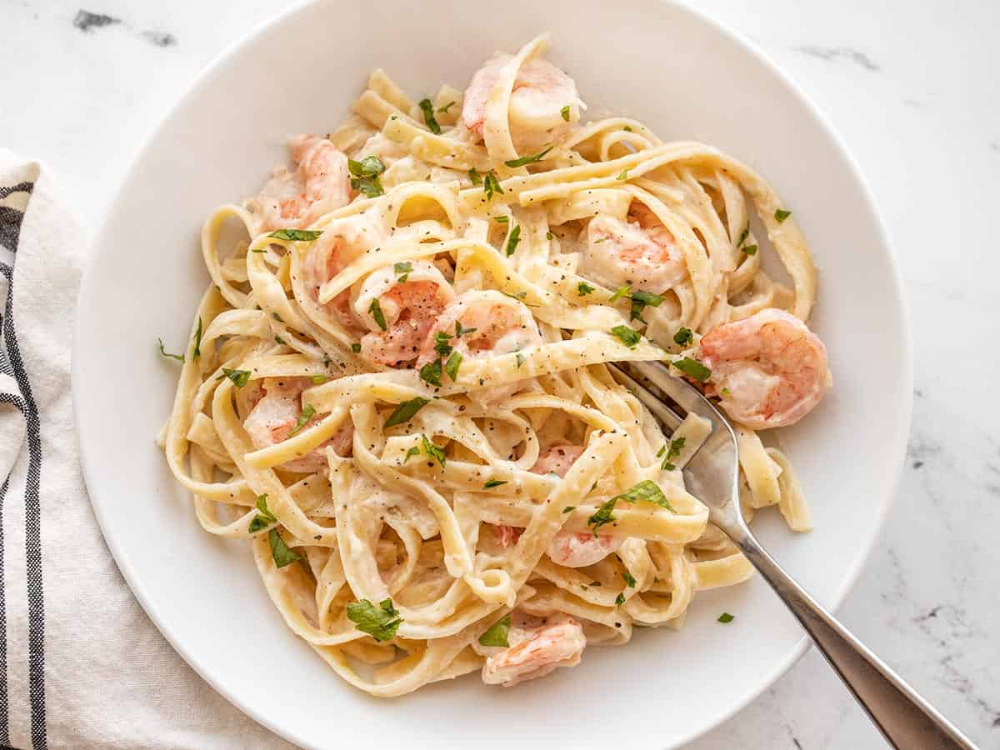

Shrimp Fettucine Alfredo

Description
This is a tasty shrimp fettucine alfredo recipe.
It yields 6 servings, but it can be adjusted for more.
Ingredients
- 1 pound fettucini pasta
- 1 tablespoon butter
- 1 pound cooked shrimp, peeled and deveined
- 4 cloves garlic, minced
- 1 cup half-and-half
- 6 tablespoons grated Parmesan cheese
- 1 tablespoon chopped fresh parsley
- salt to taste
Steps
- Fill a large pot with lightly salted water and bring to a boil.
- Cook fettucine for about 8 minutes, or until tender yet firm to the bite. Drain.
- Heat butter in a large skillet over medium heat. Cook and stir shrimp and garlic in butter for 1 minute.
- Pour in half-and-half and stir.
- Add Parmesan cheese 1 tablespoon at a time and continue to stir.
- Mix in parsley; season with salt.
- Simmer and stir frequently until sauce is thickened.
- Stir fettucine into sauce until evenly coated. Serve hot.